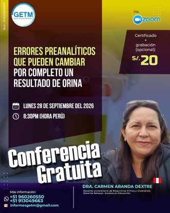
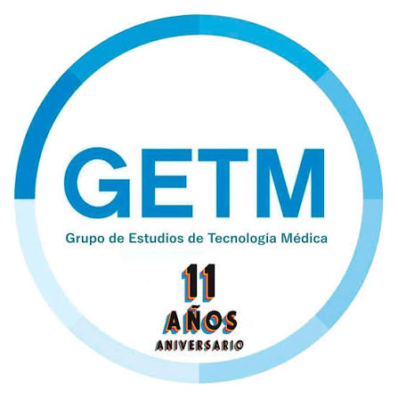
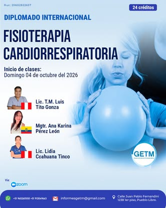
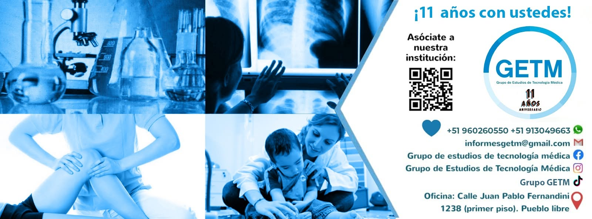
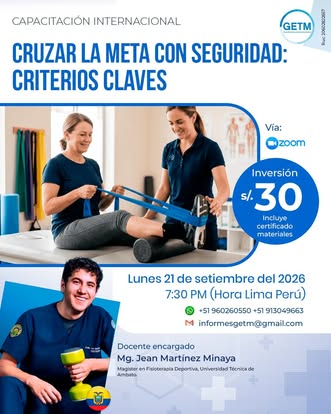
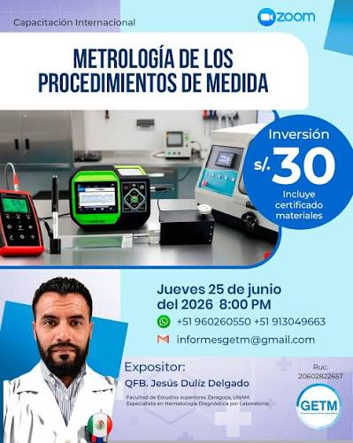
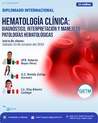
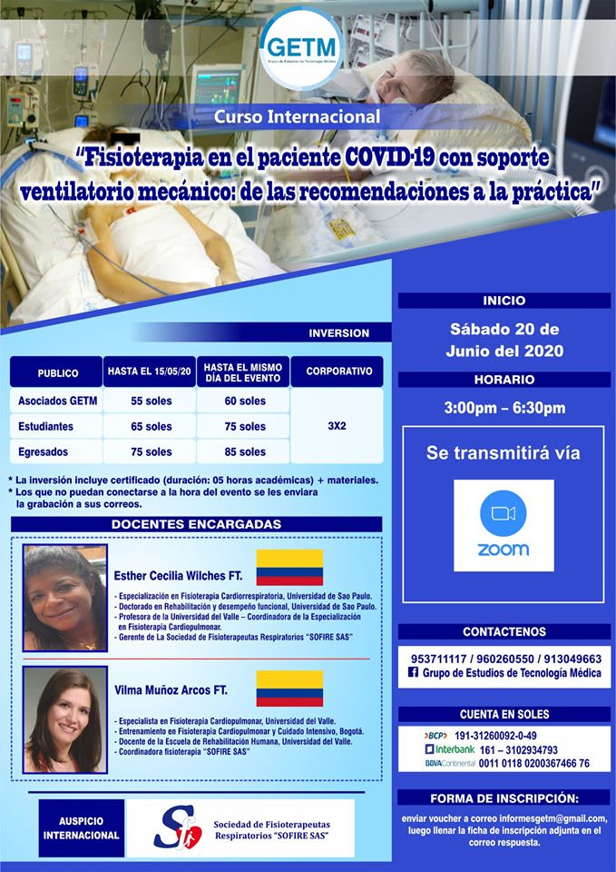
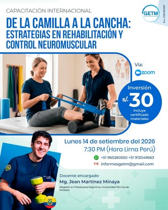

CONFERENCIA GRATUITA
Errores preanalíticos que pueden cambiar por completo un resultado de orina
28 de septiembre de 2026 · 8:30 PM · Zoom
Solicitar información →
Capacitación especializada, diplomados internacionales, talleres y eventos académicos para profesionales y estudiantes de las ciencias de la salud.


En GETM organizamos, implementamos, capacitamos y desarrollamos talleres, paneles, seminarios, congresos y actividades académicas para las ciencias de la salud.
Programas académicos diseñados para fortalecer conocimientos y competencias profesionales.

28 de septiembre de 2026 · 8:30 PM · Zoom
Solicitar información →Inicio: 04 de octubre de 2026 · 24 créditos
Más información →
21 de septiembre de 2026 · 7:30 PM · Zoom
Más información →Programas académicos de especialización con enfoque aplicado.
Actualización práctica en áreas especializadas de las ciencias de la salud.
Espacios de intercambio académico con profesionales nacionales e internacionales.
Acompañamiento para trabajos de investigación de pregrado y posgrado.
Consultorios, ambientes y salas para profesionales independientes.
Servicios y beneficios orientados a nuestra comunidad de salud.
Forma parte de una comunidad que aprende, comparte y crece junta.
Una muestra de las capacitaciones desarrolladas por GETM a lo largo de los años.




Escríbenos para recibir información sobre programas, inscripciones, membresía o servicios.
Conversar por WhatsApp →WHATSAPP+51 960 260 550
+51 913 049 663
CORREOinformesgetm@gmail.com
OFICINACalle Juan Pablo Fernandini 1238, primer piso
Pueblo Libre, Lima – Perú
INSTAGRAM@informesgetm